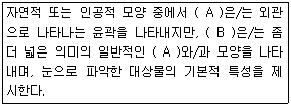
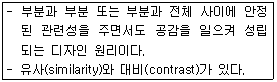
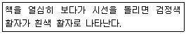
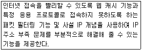
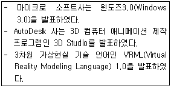
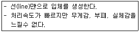
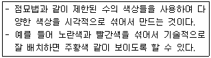
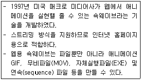
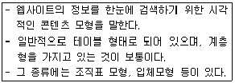

웹디자인기능사 (2014-10-11 기출문제)
1과목: 디자인 일반
1. 빛의 스펙트럼에서 인간의 눈에 색상 기호로 인지되는 파장의 범위는?
- 180nm ~ 780nm
- 180nm ~ 1080nm
- 380nm ~ 780nm
- 380nm ~ 1080nm
(정답률: 89%)

2. 기계화와 대량생산에 의한 제품의 품질저하에 반대하며 영국에서 일어난 미술공예운동(Art Crafts Movement)의 창시자는?
- 윌리엄 모리스
- 헨리 포드
- 반 데 벨데
- 무테지우스
(정답률: 92%)
3. 회색 바탕 위의 흰색 보다 검정 바탕 위의 흰색이 더 밝게 보이는 대비효과를 무엇이라고 하는가?
- 색상대비
- 명도대비
- 보색대비
- 한난대비
(정답률: 83%)
4. 그레이 스케일(Gray Scale)이란?
- 색상환에서 서로 마주보는 색을 혼합하는 것이다.
- 흰색, 회색, 검은색을 말한다.
- 명도의 기준 척도로 검은색과 흰색 사이의 단계를 나누어 놓은 것이다.
- 색의 순환성에 따라 원형으로 배열한 것이다.
(정답률: 83%)
5. 색의 활용 효과에 대한 설명으로 틀린 것은?
- 밝은 바탕에 어두운 색 글자보다 어두운 바탕에 밝은 색 글자가 더 굵고 커 보인다.
- 같은 크기의 노란색 공과 파란색 공을 비교하면 노란색 공이 더 가볍게 느껴진다.
- 천장을 좀 더 높게 보이게 하려면 벽면과 동일계열의 고명도 색을 천장에 칠한다.
- 상의를 하의보다 더 어두운 색상으로 하면 키가 더 커 보인다.
(정답률: 70%)
6. 다음 ( ) 안에 들어갈 알맞은 용어는?

- A : 점, B : 형
- A : 선, B : 형태
- A : 형, B : 면
- A : 형, B : 형태
(정답률: 85%)
7. 바우하우스의 설립자이며, 근대 건축과 디자인 운동의 대표적인 지도자는?
- 모리스(MORRIS, WILLIAM)
- 그로피우스(GROPIUS, WALTER)
- 로위(ROWEY, RAYMOND)
- 팹스너(PEVSNER, NIKOLAUS)
(정답률: 69%)
8. 저드(D, Judd)의 색채 조화의 원리에 해당하지 않는 것은?
- 질서의 원리
- 유사의 원리
- 친근감의 원리
- 연속성의 원리
(정답률: 42%)
9. 색의 혼합에서 TV의 컬러 이미지는 어떤 방식으로 표현 되는가?
- 회전혼합
- 병치가산혼합
- 중간혼합
- 감산병치혼합
(정답률: 80%)
10. 율동(rhythm)의 요소로 볼 수 없는 것은?
- 점증
- 반복
- 변칙
- 대칭
(정답률: 72%)
11. 착시현상 중 주위 도형의 조건에 따라 특정한 도형의 크기나 면적이 더욱 커 보이거나 작아 보이는 현상은?
- 길이의 착시
- 크기의 착시
- 방향의 착시
- 앙면시의 입체
(정답률: 84%)
12. 형태의 분류 중 이념적 형태에 대한 설명으로 옳은 것은?
- 자연형태, 인위적 형태로 분류할 수 있다.
- 눈으로 볼 수 있고 손으로 만질 수 있는 모든 형태를 말한다.
- 점, 선, 면의 이동형태에 따라 입체를 형성하기 때문에 추상적 형태라고 한다.
- 현실적으로 존재하는 형태를 말한다.
(정답률: 70%)
13. 먼셀 표색계의 채도에 대한 설명으로 가장 옳은 것은?
- 채도는 색의 밝고 어두운 정도를 말하며 검정을 0 으로 하고 흰색을 10 으로 한다.
- 여러 유채색을 정원 모양으로 배열하여 표현한 것을 채도라 한다.
- 채도는 1 에서 14 단계로 표기하며 채도가 높을수록 선명하다.
- 5R4/12에서 5는 채도를 의미한다.
(정답률: 65%)
14. 다음이 설명하고 있는 디자인 원리는?

- 균형
- 리듬
- 변화
- 조화
(정답률: 75%)
15. 디자인 조건 중 최소의 재료에 의해 최대의 효과를 얻고자 하는 인간의 활동과 가장 밀접한 관계가 있는 것은?
- 심미성
- 질서성
- 경제성
- 독창성
(정답률: 91%)
16. 아르누보의 신예술이라는 의미로 전통적 양식에서 탈피하고 새로운 미를 창조하려는 신예술 운동을 주장한 인물은?
- 윌리암 모리스(Morris.W)
- 앙리 반 데 벨데(Van de velde. Henri)
- 헤르만 무테지우스(Muthesius.H)
- 구스타프 클링트(Klimt.G)
(정답률: 58%)
17. 색채 조화를 위한 배색 시 고려해야 할 사항으로 거리가 먼 것은?
- 배색할 때 전체 색조를 생각한 후, 색상 수를 될 수 있는 대로 많이 한다.
- 색의 전체적인 인상을 통일하기 위해 색상, 명도, 채도 중 한 가지 공통된 부분을 만들어 준다.
- 비슷한 색상들로 이루어진 조화는 명도나 채도에 차이를 두어 대비 효과를 구성한다.
- 일반적으로 가벼운 색은 위쪽으로 하고, 무거운 색은 아래쪽으로 한다.
(정답률: 87%)
18. 그래픽의 표현 요소 중 회화나 사진을 비롯하여 도형, 도표 등 문자 이외의 시각화된 것을 의미하는 것은?
- 일러스트레이션
- 포스터
- 신문광고
- 표지
(정답률: 74%)
19. 제품 디자인(Product Design) 분야로 거리가 먼 것은?
- 영상 디자인
- 완구 디자인
- 가전 디자인
- 가구 디자인
(정답률: 92%)
20. 다음이 설명하고 있는 현상은?

- 부의 잔상
- 정의 잔상
- 동화 현상
- 매스 효과
(정답률: 68%)
2과목: 인터넷 일반
21. 일반적인 웹 브라우저의 기능으로 틀린 것은?
- 웹 페이지의 저장 및 인쇄
- 최근 방문한 URL 의 목록제공
- 소스 파일 보기
- 멀티미디어를 이용한 홈페이지 제작
(정답률: 85%)
22. 다음 중 HTML에 대한 설명으로 틀린 것은?
- HTML은 대ㆍ소문자를 구분한다.
- ASCII 무자로 되어 있는 일반 Text 형태이다.
- HTML로 제작된 페이지는 웹브라우저에서 해석되어 실행된다.
- HTML의 문서는 태그(tag)로 구성되어 있다.
(정답률: 65%)
23. 지역 간 또는 국가 간과 같이 지리적으로 완전하게 떨어진 곳을 연결하는 통신만은?
- VAN
- WAN
- MAN
- LAN
(정답률: 69%)
24. OSI 7 계층 중 프로세스 간의 대화 제어 및 동기점을 이용한 효율적인 데이터 복구를 제공하는 계층은?
- 세션 계층
- 네트워크 계층
- 물리 계층
- 전송 계층
(정답률: 50%)
25. 다음 기능을 수행하는 것은?

- 백신 프로그램
- 웹 서버
- 프록시 서버
- LAN 프로토콜 분석기
(정답률: 72%)
26. 다음 중 LAN의 물리적 통신망 구조가 아닌 것은?
- 성(star)형
- 버스(bus)형
- 십자(cross)형
- 링(ring)형
(정답률: 65%)
27. 인터넷의 시초가 된 네트워크로서, 1969년 미 국방성에서 군사목적으로 개발하였던 것은?
- KRNIC
- KREONET
- InterNIC
- ARPANET
(정답률: 86%)
28. 다음 중 컴퓨터 네트워크의 장점에 대한 설명으로 틀린 것은?
- 공유를 통하여 보안성을 높일 수 있다.
- 다른 주변장치를 공유할 수 있다.
- 공동 작업을 할 수 있다.
- 하나의 응용프로그램을 여러 사람이 사용할 수 있다.
(정답률: 86%)
29. 다음 중 URL 형식에서 :// 앞에 오는 것은?
- 프로토콜
- IP 주소
- 접속 포트번호
- 디렉터리명
(정답률: 82%)
30. 인터넷에서 접속하고자 하는 URL을 정확하게 입력하였지만 "페이지를 표시할수 없다."는 메세지와 함께 접속이 되지 않았다. 그러나 IP 주소를 입력하면 접속이 되는 경우, 클라이언트 측에서 찾을 수 있는 원인으로 가장 적당한 것은?
- IP 주소를 할당받지 못한 경우
- Proxy 서버를 설정하지 않은 경우
- FTP 서버를 설정하지 않은 경우
- DNS 서버를 설정하지 않은 경우
(정답률: 52%)
31. 자신이 원하는 정보나 특정한 목적을 이루기 위하여 인터넷을 이용하여 정보를 취득하는 일련의 작업을 의미하는 것은?
- 검색엔진
- 정보검색
- 월드 와이드 웹
- 위즈윅
(정답률: 81%)
32. 자바 스크립트에 대한 설명으로 틀린 것은?
- HTML 문서 내에 자바 스크립트가 삽입된 형태로 존재한다.
- 자바 스크립트 작성 시 변수 타입의 선언 없이 사용가능하다.
- 웹 브라우저에 의해 코드 자체가 번역된다.
- 절차 지향(Procedure-Oriented) 언어이다.
(정답률: 62%)
33. 일반적으로 웹서버가 동작하는 과정을 순서대로 옳게 나열한 것은?
- 연결설정 → 클라이언트가 정보요청 → 서버의 응답 → 연결 종료
- 연결설정 → 서버의 응답 → 클라이언트가 정보요청 → 연결 종료
- 클라이언트가 정보요청 → 연결설정 → 서버의 응답 → 연결 종료
- 클라이언트가 정보요청 → 서버의 응답 → 연결설정 → 연결 종료
(정답률: 51%)
34. 자바스크립트에서 일정한 시간마다 브라우저 상태를 파악하거나 동작을 수행하는데 사용되는 함수는?
- window.setInterval()
- window.setTimer()
- window.timer()
- window.setTime()
(정답률: 65%)
35. 교육기관을 의미하는 인터넷 도메인으로 틀린 것은?
- hs
- edu
- ac
- or
(정답률: 65%)
36. 웹 검색엔진의 유형에 해당하지 않는 것은?
- 웹 인덱스 방식
- 파일별 검색 방식
- 웹 디렉터리 방식
- 통합형 검색 방식
(정답률: 58%)
37. 자원을 해킹(hacking)으로부터 보호하기 위한 방법으로 틀린 것은?
- 조직 내부의 네트워크 컴퓨터들은 공용 IP 주소를 사용하고 외부와 연결되는 컴퓨터에만 개인용 IP 주소를 할당한다.
- 조직 내부의 네트워크를 보호하기 위해 방화벽을 설치하여 네트워크 보안을 강화한다.
- 특정 자원을 사용할 필요가 있는 사용자에게는 필요한 권한만 할당한다.
- 보안상의 문제가 알려진 서비스나 운영체제의 경우 제조사에서 제공하는 패치프로그램을 수시로 적용한다.
(정답률: 69%)
38. 다음 중 HTML 태그에 대한 설명으로 틀린 것은?
- <HTML> : 도움말의 시작
- <TITLE> : 문서의 제목 시작
- <BODY> : 문서의 본론 시작
- <HEAD> : 머리말 시작
(정답률: 82%)
39. 웹 브라우저(Web Browser)에 해당하지 않는 것은?
- 인터넷 익스플로러(Internet Explorer)
- 오페라(Opera)
- 텔넷(Telnet)
- 모자이크(Mosaic)
(정답률: 72%)
40. 웹페이지 제작 시 사용되는 스타일시트(CSS)에 대한 설명으로 틀린 것은?
- 내부 스타일시트 적용 시<HTML>와 </HTML> 내에서 자유롭게 정의할 수 있다.
- Inline CS 와 Internal CS 가 부분적으로 충동할 경우, 충돌하지 않는 Internal CS 는 그대로 상속 적용한다.
- 외부스타일시트의 파일타입(확장자)은 .CSS 이다.
- 웹문서 내에 특정 영역에만 영향을 주기 위해 <SPAN>, <DIV> 태그를 사용한다.
(정답률: 39%)
3과목: 웹그래픽스 디자인
41. 저해상도 비트맵 이미지에서 곡선이나 사선드로잉 결과는 계단 모양이나 지그재그 모양으로 나타낸다. 이와 같은 계단현상을 부드럽게 처리하기 위해 사용되는 방식은?
- 레이트레이싱(Ray Tracing)
- 레일캐스팅(Ray Casting)
- 앨리어스(Alias)
- 안티앨리어스(Anit-Alias)
(정답률: 89%)
42. 웹 페이지의 레이아웃을 디자인할 때 주의사항으로 적합하지 않은 것은?
- 모든 컨텐츠를 메인페이지에 배치하여 최대한 단순하고 간결하게 한다.
- 콘텐츠의 연결이 일관성 있고 논리적이어야 한다.
- 중요한 콘텐츠부터 배치한 후 세부 콘텐츠를 배치한다.
- 텍스트와 그래픽 요소를 적절히 조화시킨다.
(정답률: 81%)
43. 컴퓨터 그래픽스 역사 중 다음 설명에 해당하는 시대는?

- 1960년대
- 1970년대
- 1980년대
- 1990년대
(정답률: 53%)
44. 웹 사이트에 등재할 이미지의 크기가 클 경우 크기를 조정하기 위한 가장 올바른 방법은?
- 웹에서 소스 수정으로 사이즈를 조정한다.
- 드림위버에서 이미지 크기를 줄인다.
- 포토샵의 이미지 사이즈에서 픽셀 수를 줄인다.
- 나모 웹 에디터에서 웹용으로 저장할 때 Quality를 낮춘다.
(정답률: 64%)
45. 컴퓨터 그래픽스 시스템의 입력장치로 틀린 것은?
- 디지타이저(Digitizer)
- 타블렛(Tablet)
- 스캐너(Scanner)
- 플로터(Plotter)
(정답률: 67%)
46. 다음 중 동영상 관련 파일포맷으로 옳지 않은 것은?
- asf
- wmv
- avi
- xml
(정답률: 75%)
47. 콘텐츠를 분류, 분석, 그룹핑 하는 등의 작업이 이뤄지는 정보 체계화(Contents Branch) 과정을 단계별로 가장 적절하게 나열한 것은?
- 콘텐츠 수집 → 콘텐츠 그룹화 → 콘텐츠 구조화 → 계층구조의 설계 → 콘텐츠 구조설계 테스트
- 콘텐츠 수집 → 계층구조의 설계 → 콘텐츠 그룹화 → 콘텐츠 구조화 → 콘텐츠 구조설계 테스트
- 콘텐츠 수집 → 콘텐츠 그룹화 → 콘텐츠 구조화 → 콘텐츠 구조설계 테스트 → 계층구조의 설계
- 콘텐츠 수집 → 콘텐츠 구조화 → 콘텐츠 구조설계 테스트 → 콘텐츠 그룹화 → 계층구조의 설계
(정답률: 46%)
48. 다음 설명에 해당하는 3차원 모델링 방법은?

- 와이어 프레임 모델(Wire-frame model)
- 서페이스 모델(Surface model)
- 솔리드 모델(Solid model)
- 파라메트릭 모델(Parametric model)
(정답률: 76%)
49. 웹사이트 분석 요소로 가장 거리가 먼 것은?
- 사용자의 지적수준
- 메뉴구성
- 디자인구성
- 사이트 제작 기술수준
(정답률: 80%)
50. 다음이 설명하고 있는 것은?

- Halfton
- Gradation
- Pixel
- Dithering
(정답률: 67%)
51. 다음 중 벡터이미지에 대한 설명으로 맞는 것은?
- 픽셀을 이용해 전체 이미지를 구성한다.
- 주로 로고나 심벌과 같이 정교한 작업에 적합하다.
- 확대를 하면 계단 현상이 발생한다.
- 벡터이미지 제작의 대표적인 소프트웨어는 포토샵이다.
(정답률: 76%)
52. 다음이 설명하고 있는 것은?

- 이미지
- 클레이
- 애니메이션
- 플래시
(정답률: 77%)
53. 웹사이트 내에서 움직이는 배너광고를 제작하고자 할 때 사용할 프로그램으로 가장 거리가 먼 것은?
- Flash
- Image Ready
- Director
- Illustrator
(정답률: 63%)
54. 플래시(Flash)에서 맨 앞과 맨 끝 키 프레임에만 변화를 주면 중간 과정의 애니메이션을 만들어 주는 것을 무엇이라고 하는가?
- Motion
- Tweening
- Transform
- Guide
(정답률: 57%)
55. 일반적으로 Photoshop 에서 검정색과 흰색의 이미지로 구성되어 선택된 영역이 합성되지 않도록 마스크 역할을 하는 메뉴는?
- 조정 레이어(Adjustment Layer)
- 알파채널(Alpha Channel)
- Z 버퍼(Z-buffer)
- 히스토리(History)
(정답률: 57%)
56. 대상물의 위치 이동으로 움직임을 표현하는 것으로 종이 등에 특정한 형태를 그리고 잘라낸 후 각각의 종이들을 한 장면씩 움직여 가며 촬영하는 애니메이션 기법은?
- 컷 아웃 애니메이션
- 셀 애니메니션
- 투광 애니메니션
- 스톱모션 애니메니션
(정답률: 74%)
57. 다음 중 웹폰트(MWF)에 대한 설명으로 틀린 것은?
- 웹폰트는 작은 사이즈의 글자를 사용 한 경우에도 깨끗하게 보여 가독성이 높다.
- 웹폰트를 사용해서 사이트를 만든 경우 해당폰트가 컴퓨터에 설치되어 있지 않으면 굴림체로 대체되어 보인다.
- 문법에 맞지 않는 한글이나 한자의 경우에는 표현이 불가능한 경우도 있다.
- 방문자의 컴퓨터에 해당 폰트가 설치되어 있지 않아도 작업된 웹폰트를 볼 수 있다.
(정답률: 56%)
58. 다음 파일 포맷 중 벡터 그래픽 파일 포맷이 아닌 것은?
- EPS
- PCX
- WMF
- AI
(정답률: 42%)
59. 다음이 설명하고 있는 것은?

- 스토리보드(Story Board)
- 사이트 맵(Site Map)
- 레이아웃(layout)
- 내비게이션(Navigation)
(정답률: 61%)
60. 일반적으로 인쇄를 목적으로 이미지를 만들 경우에 사용되는 색상 모드는?
- CMYK 모드
- HSB 모드
- RGB 모드
- LAB 모드
(정답률: 79%)